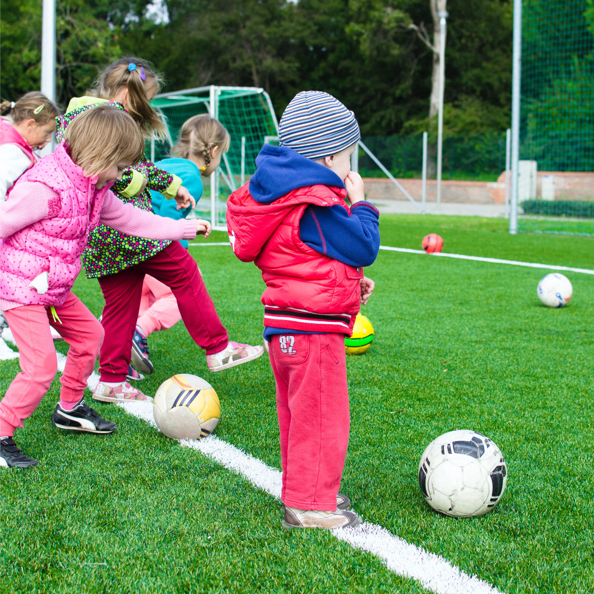

Welcome!
Founded in 2012, SportingKids is a charity with a mission to get more children aged between 6 and 16 involved in sport. We aim to use the power of sport to tackle inactivity and obesity in West Norfolk by setting up and running events in the local area.
On our website you can find out more about our organisation, stay up to date with our latest news, find information about our upcoming events or even becoming a volunteer!